[[НУЖНО ОТ КЛИЕНТА: описание ООО «ЛАВИТЕК» — 3–5 предложений: с какого года работает, на чём специализируется, регион поставок, наличие складской программы. Без цифр достижений, если их нечем подтвердить]]
Ресурс волоки задаётся не финишной шлифовкой, а качеством порошка и спекания. Ниже — путь от вольфрамовой руды до готовой волоки: на каждом переделе закладываются зернистость, пористость и содержание кобальта, из которых потом складывается стойкость.
Схема описывает производство твёрдого сплава как таковое и не относится к конкретному предприятию.
[[НУЖНО ОТ КЛИЕНТА: вводный абзац о поставках ЛАВИТЕК — 2–3 предложения]]
В исходных данных поставщика число стандартных типоразмеров указано противоречиво (в одной версии «несколько сотен», в другой «200»), поэтому цифра здесь не приводится.
Четыре вида обработки, под которые подбирается инструмент. Проволока идёт слева направо: обдирка, сухое волочение, мокрое волочение, деформирующая обработка.
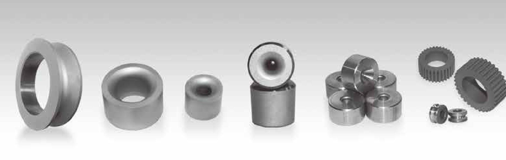
| Марки твёрдого сплава | ||||||
|---|---|---|---|---|---|---|
| Серия | Марка | ТвёрдостьHRA | Плотностьг/см³ | Предел прочности при изгибеН/мм² | Зернистостьмкм | Рекомендуемое применение |
| GK | GK05 | 91,5–92,5 | 14,85–15,05 | 2720 | 1,5 | Повышенная износостойкость, высокая твёрдость. Сухое волочение металлокорда, высокоуглеродистой стали и цветных металлов. |
| GK05A | 92,0–93,0 | 14,80–15,00 | 2450 | 1,0 | Высокая износостойкость и прочность. Мокрое волочение металлокорда и высокоуглеродистой стали; сухое волочение металлокорда, высокоуглеродистой стали и сварочной проволоки; подложка под CVD-покрытие. | |
| GK05C | 91,6–92,6 | 14,85–15,05 | 2800 | 1,3 | Марка для подложек под CVD-покрытие. Волочение средне- и низкоуглеродистой стальной проволоки. | |
| GK10Hновая | 90,5–91,5 | 14,85–15,05 | 2300 | 2,0 | Марка для подложек под CVD-покрытие. Волочение средне- и высокоуглеродистой стальной проволоки. | |
| GK10X | 91,8–92,8 | 14,90–15,10 | 1560 | 1,0 | Высокая теплостойкость и прочность. Сухое волочение проволоки повышенных требований. | |
| GK30H | 89,7–90,7 | 14,65–14,85 | 2800 | 2,0 | Высокая износостойкость, повышенная твёрдость. Холодное волочение прутка, трубы и крупногабаритного профиля. | |
| GU | GU10 | 92,5–93,5 | 14,80–15,00 | 2700 | 0,8 | Высокая твёрдость и износостойкость. Мокрое волочение высокоуглеродистой стали и сварочной проволоки; сухое волочение высокоуглеродистой стали, сварочной проволоки и цветных металлов. |
| GU20 | 91,3–92,1 | 14,30–14,50 | 3500 | 0,8 | Высокая вязкость, повышенная твёрдость. Износостойкая оснастка волочильных участков. | |
| GU10UF | 93,5–94,5 | 14,65–14,85 | 3500 | 0,4 | Очень высокая твёрдость, максимальная износостойкость. Мокрое волочение металлокорда, проволоки для распиловки, высокоуглеродистой стали и сварочной проволоки. | |
| GF | GF40Hновая | 88,2–89,2 | 13,95–14,15 | 3000 | 1,0 ? 2,0 | Резьбовые сердечники. Высокая износостойкость и вязкость. |
| GF50Hновая | 89,0–89,8 | 14,10–14,30 | 3200 | 1,5 ? 3,0 | Профильный и прессовый инструмент. Стойкость к сколам, износостойкость. | |
Обозначения марок приведены в системе завода-изготовителя и не заменяются российскими аналогами. Сопоставление с ВК6 / ВК8 в каталоге не приводится: в исходных данных нет содержания кобальта, без которого такое сопоставление было бы догадкой.
Знаком «?» отмечен разделитель диапазона зернистости у марок GF40H и GF50H: в исходном файле он не читается. Значения требуют сверки с бумажным оригиналом (TODO-01, TODO-02).
Ультрамелкозернистый сплав. Мокрое волочение.
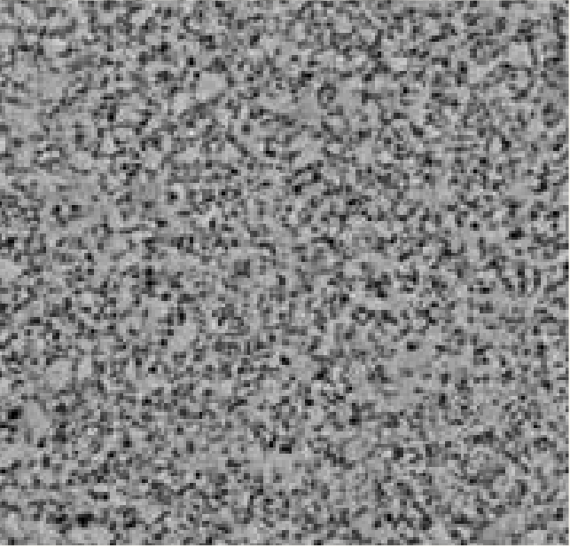
Сплав повышенных характеристик. Сухое волочение.
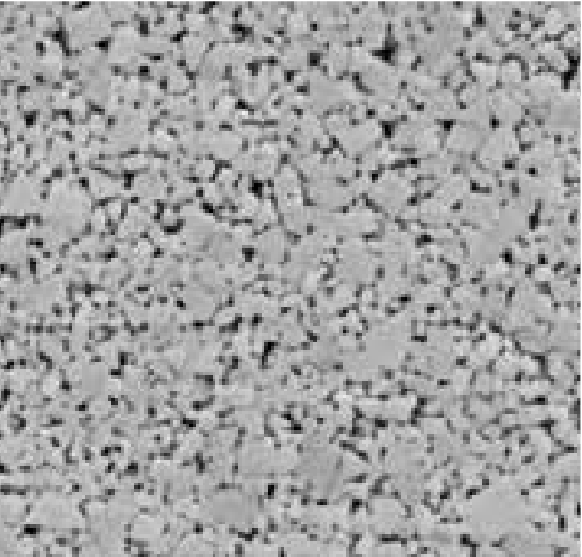
Подложка под алмазное CVD-покрытие.
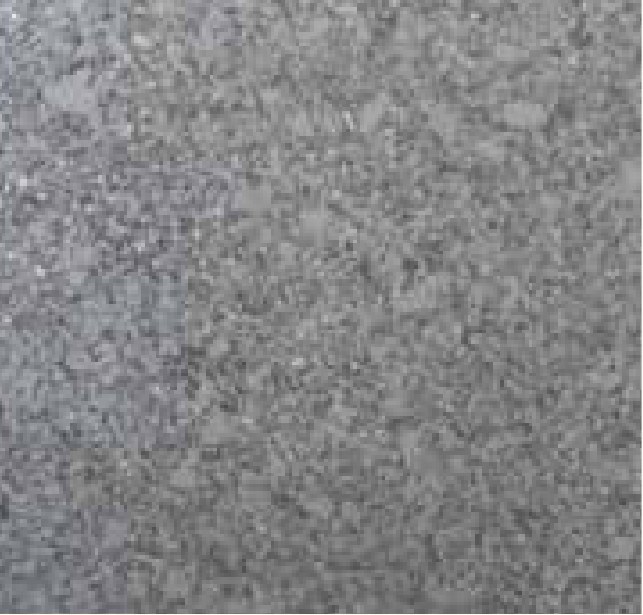
Микрофотографии структуры — завода-изготовителя, приведены в масштабе оригинала. Видно, во что превращается зернистость из таблицы марок: у GU10UF зерно 0,4 мкм, у GK10H — 2,0 мкм.
Твёрдость и прочность твёрдого сплава задаются двумя параметрами: долей кобальта-связки и размером зерна карбида вольфрама. Они тянут в разные стороны — с ростом кобальта прочность растёт, а твёрдость падает.
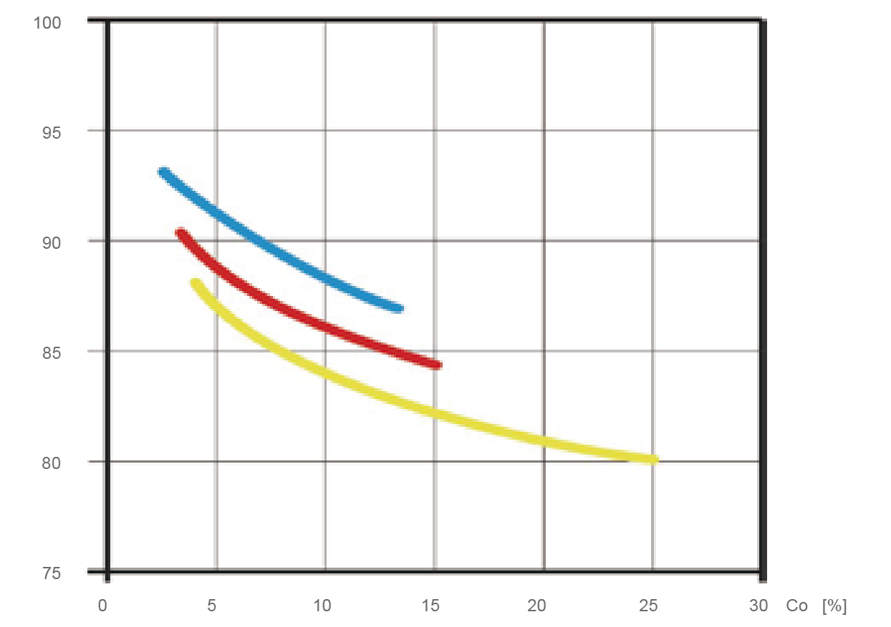
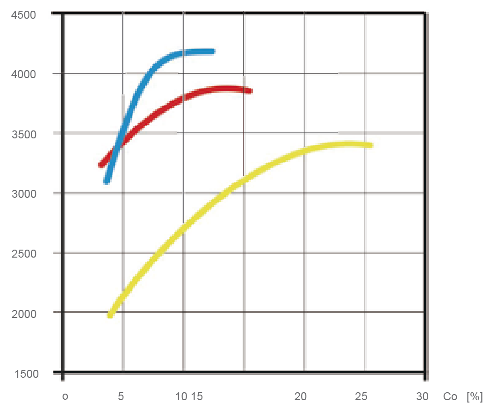
Диапазоны сняты с диаграммы исходного каталога измерением по шкале
(scripts/measure-bars.mjs) и округлены до 0,5 мм. В оригинале границы полос
размыты — это ориентир для подбора, а не предельные значения. Точный типоразмер —
по таблицам разделов.
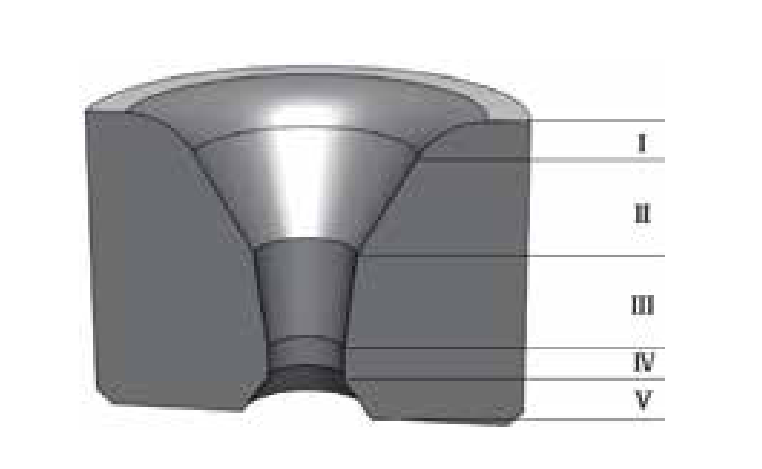
Материал входит в волоку. Переход выполняется по радиусу, чтобы волока не оставляла задиров на металле.
Удерживает смазку и подаёт её на металл, обеспечивая устойчивый ход волочения.
Зона пластической деформации металла. Ключевые размеры — длина и угол. Чем короче зона, тем выше давление металла на рабочий конус: растёт напряжение волочения, ускоряется износ волоки, ухудшается результат. Длину подбирают по материалу, диаметру и условиям смазки: для мягких металлов короче, чем для твёрдых; для проволоки малого диаметра короче, чем для большого; при мокром волочении короче, чем при сухом. С ростом угла рабочего конуса повышаются предел прочности и твёрдость протянутого металла, но снижаются показатели на изгиб и кручение. Для стали угол берут меньше, для цветных металлов и их сплавов — больше.
Здесь металл получает окончательный размер. Длину калибрующей зоны выбирают по твёрдости материала, сечению и условиям смазки. Слишком длинная зона увеличивает трение, волока греется, ресурс падает; одновременно растут напряжение волочения, усадка, обрывность и расход электроэнергии. Слишком короткая зона не удерживает размер: при выработке рабочего конуса размер изделия уходит. Как правило, для мягких металлов зона короче, чем для твёрдых; для материала большого диаметра короче, чем для малого; при мокром волочении короче, чем при сухом.
Последний участок, который проходит металл. Защищает калибрующую зону от выкрашивания, поэтому делать его слишком коротким нельзя — иначе выходной торец волоки скалывается. Выходной конус не даёт протянутому металлу задирать выход калибрующей зоны и портить поверхность проволоки. При перешлифовке острую кромку на стыке выходного конуса и калибрующей зоны обязательно скругляют, чтобы проволока не получала задиров при проходе.
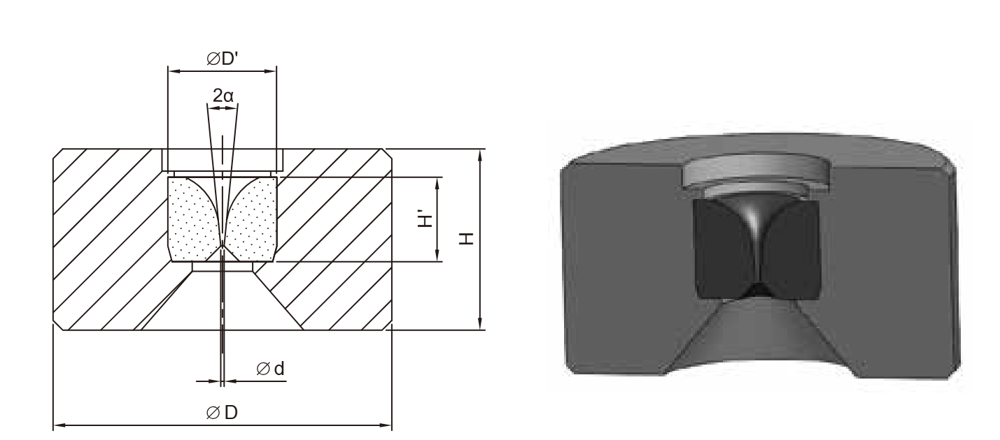
| Волоки GT01 для мокрого волочения металлической проволоки | |||
|---|---|---|---|
| Обозначение изделия | Размеры D×Hмм | Диаметр отверстия dмм | Угол рабочего конуса 2αград. |
| GT01-0281510-d | обойма 9×7: 28×15 | 0,100,110,120,140,160,180,200,220,240,260,280,300,350,400,450,500,550,600,650,700,750,800,850,090,951,001,101,1201,301,401,501,601,80 | 10,5 |
| GT01-0251409-d | обойма 9×7: 25×14 | 0,100,120,140,160,180,200,220,240,260,280,300,350,400,450,500,550,600,650,700,750,800,850,900,951,001,101,201,301,401,501,601,80 | 9,5 |
Волочение металлокорда для шин. Высокая точность размера, полный ряд диаметров отверстия 0,1–1,8 мм.
Марка на основе ультрамелкозернистого карбида вольфрама, очень высокая твёрдость. Однородная металлографическая структура обеспечивает износостойкость и вязкость.
Мокрое волочение металлокорда, проволоки для распиловки, проволоки для рукавов высокого давления, низко- и высокоуглеродистой стальной проволоки.
Профиль отверстия волок для металлокорда отличается точностью диаметра и качеством исполнения: сокращается время перешлифовки и растёт выход годного при перешлифовке.
С этой полосы снято изображение патента китайского завода-изготовителя и упоминание о том, что технологический процесс запатентован: это права другого предприятия.
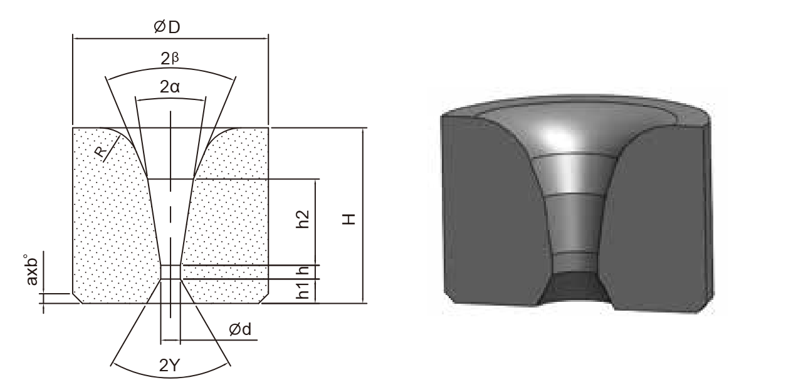
| Волоки GS11 для проволоки и прутка | |||
|---|---|---|---|
| Обозначение изделия | Размеры D×Hмм | Диаметр отверстия dмм | Угол рабочего конуса 2αград. |
| GS11-0121013-d | 12×10 | 0,40,60,81,01,21,41,61,82,0 | 13 |
| GS11-0161314-d | 16×13 | 1,61,82,02,22,42,62,83,03,23,43,6 | 14 |
| GS11-0201613-d | 20×16 | 0,91,32,0 | 13 |
| GS11-0201815-d | 20×18 | 3,03,23,43,63,84,04,24,44,64,85,0 | 15 |
| GS11-0211813-d | 21,5×18 | 5 | 10 |
| GS11-0222015-d | 22×20 | 4,04,24,44,64,85,05,25,45,65,86,06,26,46,66,87,0 | 15 |
| GS11-0252215-d | 25×22 | 5,05,25,45,65,86,06,56,87,07,58,08,59,0 | 15 |
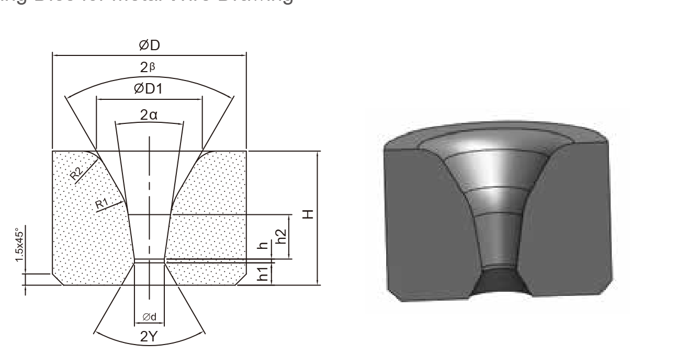
| Волоки GS2 для скоростного волочения проволоки | |||
|---|---|---|---|
| Обозначение изделия | Размеры D×Hмм | Диаметр отверстия dмм | Угол рабочего конуса 2αград. |
| GS2-0121312-d | 12,88×13 | 0,60,750,951,15 | 12 |
| GS2-0151213-d | 15×12 | 0,40,450,50,60,70,80,91,01,11,21,31,41,51,61,71,8 | 12 или 13 |
| GS2-0151316-d | 15×13 | 1,0 | 16 |
| GS2-0151312-d | 15,73×13 | 0,350,400,450,500,550,600,650,700,750,800,850,900,951,001,051,101,201,301,401,501,601,701,801,903,202,202,302,402,50 | 12 |
| GS2-0151314-d | 15,73×13 | 2,602,702,802,93,03,13,23,33,43,53,63,73,83,94,04,14,24,34,44,54,64,74,84,95,05,15,25,35,45,55,65,8 | 14 |
| GS2-0161213-d | 16×12 | 1,11,31,51,61,71,82,02,22,4 | 13 |
| GS2-0161310-d | 16×13 | 0,650,9 | 12 или 9,5 |
| GS2-0161410-d | 16×14 | 0,60,70,81,01,21,41,61,82,02,22,42,6 | 10,5 |
| GS2-0181509-d | 18×15 | 0,61,3 | 9,5 |
| GS2-0191613-d | 19×16 | 1,82,32,73,33,7 | 13 |
| GS2-0201613-d | 20×16 | 0,91,21,31,41,51,61,71,81,92,02,12,22,32,42,52,62,72,83,03,13,23,33,43,53,63,73,83,94,04,14,24,34,44,54,64,84,95,05,55,65,7 | 13 |
| GS2-0201709-d | 20×17 | 1,151,21,3 | 9 |
| GS2-0201710-d | 20×17 | 1,01,62,1 | 10 |
| GS2-0201710-d | 20×17 | 0,60,80,91,01,21,84,75,75,8 | 10,5 |
| GS2-0201713-d | 20×17 | 1,41,62,02,32,62,83,03,23,53,63,84,14,24,44,54,85,05,25,75,8 | 13 |
| GS2-0221815-d | 22×18 | 3,24,24,44,64,85,05,2 | 13 или 15 |
| GS2-0252015-d | 25×20 | 4,85,05,25,45,65,86,0 | 15 |
| GS2-0252016-d | 25×20 | 6,26,46,6 | 16 |
| GS2-0282013-d | 28×20 | 4,04,55,66,3 | 13 |
| GS2-0301920-d | 30×19 | 7,757,95 | 20 |
| GS2-0302016-d | 30×20 | 6,06,46,77,07,47,88,08,48,8 | 16 |
| GS2-0302112-d | 30×21 | 5,76,06,57,07,58,0 | 12 |
| GS2-0302116-d | 30×21 | 7,07,89,510,6 | 16 |
| GS2-0352516-d | 35×25 | 9,09,59,810,511,512,0 | 16 |
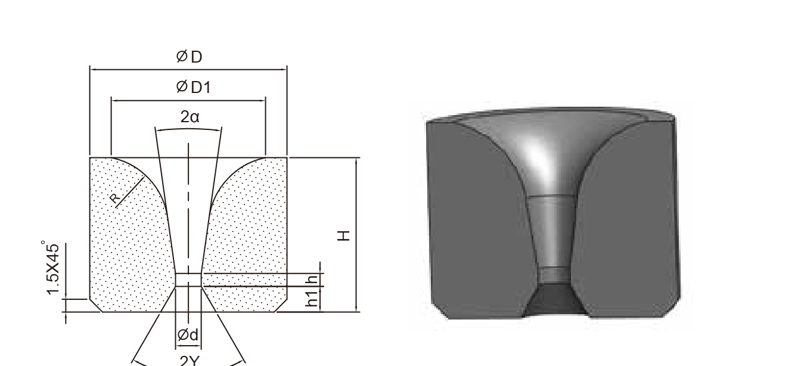
| Волоки GV для проволоки и прутка | |||
|---|---|---|---|
| Обозначение изделия | Размеры D×Hмм | Диаметр отверстия dмм | Угол рабочего конуса 2αград. |
| GV-0151312-d | 15×13 | 0,60,70,80,91,01,11,21,31,41,51,61,71,81,92,02,12,32,42,52,62,72,83,03,33,6 | 12 или 18 |
| GV-0161314-D | 16×13 | 0,40,81,21,251,31,351,41,451,51,551,61,651,71,751,781,81,851,91,952,02,12,032,052,152,22,252,32,342,352,42,452,52,552,62,652,72,82,9 | 14 или 10 или 8 |
| GV-0171512-d | 17×15 | 0,81,01,52,02,53,0 | 12 или 14 |
| GV-0171514-d | 17,7×15 | 0,60,70,80,91,11,31,51,71,92,12,32,42,72,93,13,33,53,73,94,14,34,54,74,95,15,35,55,75,9 | 14 |
| GV-0181814-d | 18,7×18,1 | 3,94,54,96,0 | 14 |
| GV-181513-d | 18,9×15,3 | 1,51,82,02,32,52,83,03,33,63,94,24,54,74,95,25,45,65,76,0 | 13,5 (13 или 14) |
| GV-0201412-d | 20×14 | 2,052,102,152,202,252,302,352,402,452,502,552,602,652,702,752,802,852,902,903,003,4 | 12 |
| GV-0201414-d | 20×14 | 1,11,62,03,053,103,153,203,253,303,353,403,453,503,553,84,04,24,74,85,05,2 | 14 |
| GV-0201524-d | 20×15 | 3,03,33,53,84,04,34,54,85,25,55,76,0 | 24 |
| GV-0201710-d | 20×15 | 1,01,21,7 | 10,5 |
| GV-0201612-d | 20,4×16 | 1,51,82,02,32,52,83,03,33,53,84,04,24,54,95,25,45,76,0 | 12 |
| GV-0221816-d | 22×18 | 1,62,12,42,62,72,83,03,13,153,23,33,353,43,453,53,553,63,653,73,753,83,93,954,04,054,14,154,24,254,34,354,44,454,54,64,654,74,754,84,854,94,955,05,055,15,155,25,255,35,355,45,455,55,555,65,655,75,755,85,855,95,956,06,16,26,36,46,56,66,76,86,9 | 14 или 16 |
| GV-0221820-d | 22×18 | 3,03,183,43,53,63,73,83,934,04,24,54,785,0 | 20 |
| GV-02218224-d | 22×18 | 5,45,86,06,356,4 | 24 |
| GV-0231522-d | 23×16 | 6,58,5 | 22 |
| GV-0231516-d | 23,8×15,8 | 5,76,06,26,56,87,07,37,57,78,28,6 | 16 |
| GV-0241825-D | 24×18 | 10,5 | 25 |
| GV-0251716-d | 25×17,9 | 5,86,06,36,56,77,07,37,78,28,89,29,5 | 16 |
| GV-0282013-d | 28×20 | 5,56,26,57,08,08,8 | 13 |
| GV-0282414-d | 28,7×24 | 3,54,05,86,06,36,66,97,27,47,57,88,18,48,79,09,39,69,910,210,510,811,111,411,712,0 | 14 |
| GV-0282418-d | 28,7×24 | 7,958,511,9512 | 18 |
| GV-0301824-d | 30×18 | 7,78,08,28,58,79,09,29,59,711,012,0 | 24 |
| GV-0302216-d | 30×22 | 3,84,04,8 | 16 |
| GV-0332020-d | 33,8×20,8 | 10,511,512,513,514,515,5 | 20 |
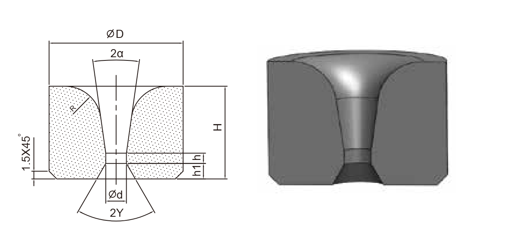
| Волоки GW для проволоки и прутка | |||
|---|---|---|---|
| Обозначение изделия | Размеры D×Hмм | Диаметр отверстия dмм | Угол рабочего конуса 2αград. |
| GW-0100810-d | 10×8 | 0,440,480,520,560,620,67 | 10 |
| GW-0120810-d | 12×8 | 0,30,350,40,450,50,60,70,80,91,01,1.1,21,31,41,51,61,71,81,92,02,22,32,4 | 10,5 или 18 |
| GW-0121311-d | 13×13 | 0,60,670,70,720,80,91,01,2 | 11 |
| GW-0151012-d | 15×10 | 1,21,61,82,02,22,42,62,83,03,23,43,63,84,24,74,9 | 12 |
| GW-0151312-d | 15×13 | 1,21,61,82,22,42,52,62,72,82,93,0 | 12 |
| GW-0191712-d | 19,3×17 | 2,02,12,22,32,42,52,62,72,82,93,0 | 12 |
| GW-0191714-d | 19,3×17 | 3,13,23,33,43,53,63,73,83,94,04,14,24,34,44,54,64,74,84,95,05,15,25,35,45,55,65,75,85,96,06,16,26,36,46,56,66,7.6,86,97,07,17,27,37,47,357,67,77,87,98,0 | 14 |
| GW-0201618-d | 20×16 | 2,8 | 18 |
| GW-0201710-d | 20×17 | 4,75,2 | 10 |
| GW-0201709-d | 20×17 | 5 | 9 |
| GW-0201816-d | 20×18 | 6,7 | 16 |
| GW-0242014-d | 24,8×20 | 5,15,45,76,06,36,67,07,27,57,88,18,48,79,09,39,69,910,210,510,811,1 | 14 |
| GW-0251816-d | 25×18 | 5,45,96,37,07,7 | 16 |
| GW-0251824-d | 25×18 | 5,76,06,26,56,77,07,27,57,7 | 26 |
| GW-0271813-d | 27×18 | 4,75,76,26,77,07,37,78,28,69,29,610,2 | 10 или 13 |
| GW-0271822-d | 27,3×18 | 10,2 | 22 |
| GW-0282013-d | 28×20 | 5,56,06,26,56,77,08,08,8 | 12 или 13 |
| GW-0282113-d | 28×21 | 7,07,58,08,58,89,29,5 | 13 |
| GW-0302124-d | 30×21 | 8,09,710,010,511,011,5 | 24 |
| GW-0302216-d | 30×22 | 5,98,09,0 | 16 |
| GW-0302414-d | 30×24 | 7,27,88,49,09,910,8 | 14 |
| GW-0332414-d | 33×24 | 8,69,910,511 | 13 или 14 |
| GW-0332020-d | 33,8×20,8 | 9,510,511,512,513,514,515,5 | 20 |
| GW-0342414-d | 34,9×24 | 4,05,110,110,410,711,011,311,712,212,713,213,614,014,314,715,015,315,716,216,717,017,4 | 12 или 14 |
| GW-0352024-d | 35×20 | 12,513,013,514,515,5 | 24 |
| GW-0352224-d | 35×22 | 11,512,012,513,013,514,014,51515,5 | 24 |
| GW-0372420-d | 37,9×24 | 11,512,513,514,515,516,517,5 | 20 |
| GW-0382413-d | 38×24 | 9,39,610,511,0 | 13 |
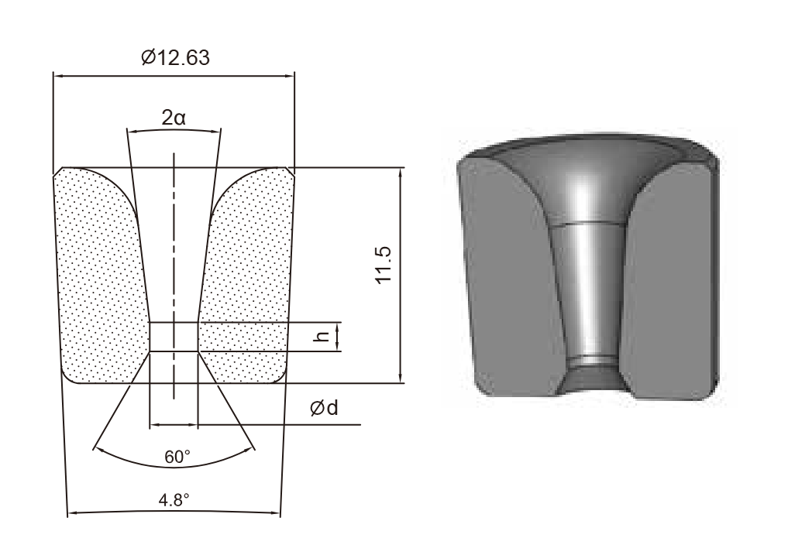
| Напорные волоки GY01 | |||
|---|---|---|---|
| Обозначение изделия | Размеры D×Hмм | Диаметр отверстия dмм | Угол рабочего конуса 2αград. |
| GY01-0121111-d | 12,66×11,5 | 0,400,450,500,550,600,650,700,750,800,850,951,001,101,201,301,401,501,601,701,801,902,002,102,202,302,402,50 | 11,5° |
| GY01-0121113-d | 12,66×11,5 | 2,602,702,802,903,003,103,203,303,403,503,603,703,803,904,004,104,204,304,404,504,604,704,804,905,005,105,205,305,405,505,605,705,805,906,00 | 13,5° |
| GY01-0171711-d | 17,77×17,8 | 5,86,47,0 | 11° |
| Допуски на диаметр отверстия | |
|---|---|
| Диаметр отверстия dмм | Допускмм |
| < 0,50 | 0 / - 0,06 |
| 0,50–1,30 | 0 / - 0,10 |
| 1,40–3,00 | 0 / - 0,15 |
| > 3,00 | 0 / - 0,20 |
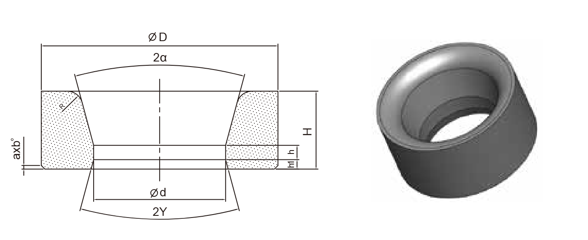
| Волоки G22 для волочения труб | |||
|---|---|---|---|
| Обозначение изделия | Размеры D×Hмм | Диаметр отверстия dмм | Угол рабочего конуса 2αград. |
| G22-0282414-d | 28,7×24 | 5,86,06,36,66,97,27,47,57,88,18,48,79,09,39,69,910,210,510,811,111,411,712,0 | 14 |
| G22-0302124-d | 30×21 | 8,09,71010,51111,5 | 24 |
| G22-0332414-d | 33×24 | 8,69,910,511 | 13 или 14 |
| G22-0332420-d | 33,8×20,8 | 8,29,510,511,512,513,514,5 | 16 или 20 |
| G22-0342414-d | 34,9×24 | 4,05,110,110,410,711,011,311,712,212,713,213,614,014,314,715,015,315,716,216,717,017,4 | 12 или 14 |
| G22-0352024-d | 35×20 | 12,513,514,515,5 | 24 |
| G22-0352224-d | 35×22 | 11,512,012,513,013,514,014,515,015,5 | 24 |
| G22-0372413-d | 37,9×24 | 9,39,610,511,0 | 13 |
| G22-0372420-d | 37,9×24 | 11,512,513,514,515,516,517,5 | 20 |
| G22-0392416-d | 39,9×24 | 1717,51818,5192021 | 16 |
| G22-0392730-d | 39,9×27 | 15,718,1 | 30 |
| G22-0402224-d | 40×22 | 15,516,517,518,5 | 24 |
| G22-0402524-d | 40×25 | 15,516,517,518,519,511,8512,8513,8517,518,8 | 24 или 30 или 27 |
| G22-0402730-d | 40×27 | 17,718,1 | 30 |
| G22-0424315-d | 42×43 | 14,514,6517,95 | 15 |
| G22-0432220-d | 43,9×22,7 | 17,018,019,020,021,0 | 20 |
| G22-0442618-d | 44,8×26,5 | 212223242522,1 | 18 или 30 |
| G22-0452424-d | 45×24 | 19,520,521,522,5 | 24 |
| G22-0452730-d | 45×27 | 18,7 | 30 |
| G22-0453530-d | 45×35 | 15,5 | 30 |
| G22-0472519-d | 47,8×25 | 17,518,519,520,521,522,523,524,5 | 19 |
| G22-0483024-d | 48×30 | 17,02320,5 | 24 ? 19 |
| G22-0493030-d | 49,8×30 | 22,14 | 30 |
| G22-0502418-d | 50×24 | 21,7 | 18 |
| G22-0502824-d | 50×28 | 23,524,525,5 | 24 |
| G22-0503030-d | 50×30 | 21,6 | — |
| G22-0503730-d | 50×37 | 18,5719,5021,5 | 30 |
| G22-0504025-d | 50×40 | 17,98 | 25 |
| G22-0505115-d | 50×51 | 21,524,4824,57 | 15 |
| G22-0553024-d | 55×27 | 242525,52626,527,528,529,5 | 19 ? 24 |
| G22-0553030-d | 55×30 | 24,625,0525,10 | 30 |
| G22-0553212-d | 55×32 | 27 | 12 |
| G22-0553830-d | 55×38 | 23,524,8825,0226,5 | 30 |
| G22-0555215-d | 55×52 | 28,5 | 15 |
| G22-0572919-d | 57×29 | 25272829 | 19 |
| G22-0583424-d | 58×34 | 262830 | 24 |
| G22-0602718-d | 60×27 | 27,6527,90 | 18 |
| G22-0602930-d | 60×29,5 | 28,1530,10 | 30 |
| G22-0603024-d | 60×30 | 27,227,828,529,529,529,730,130,531,532,533,534,5 | 24 или 30 |
| G22-0604224-d | 60×42 | 2529 | 24 или 30 |
| G22-0605215-d | 60×52 | 29,53 | 15 |
| G22-0653030-d | 65×30 | 31,331,734,1433,5 | 30 |
| G22-0655215-d | 65×52 | 34,55 | 15 |
| G22-0703030-d | 70×30 | 29,536,3533,7534 | 30 или 18 |
| G22-0703624-d | 70×36 | 36 | 24 |
| G22-0704030-d | 70×40 | 31,47 | 30 |
| G22-0705215-d | 70×52 | 37,5 | 15 |
| G22-0752626-d | 75×26 | 56,156,6 | 26 |
| G22-0752930-d | 75×29,5 | 35,3035,9036,337,3 | 18 |
| G22-0754230-d | 75×42 | 39,05 | 30 |
| G22-0802626-d | 80×26 | 63,1 | 26 |
| G22-0804230-d | 80×42 | 44,1244,48 | 30 |
| G22-0853330-d | 85×33 | 49,5 | 30 |
| G22-0964830-d | 96×48 | 54,5555,40 | 30 |
| G22-1003330-d | 100×33 | 59,70 | 30 |
| G22-1004830-d | 100×48 | 59,559,5 | 30 |
| G22-1053026-d | 105×30 | 79,60 | 26 |
| G22-1054830-d | 105×48 | 61,162,4563,10 | 30 |
| G22-1103026-d | 110×30 | 88,6 | 26 |
| G22-1105030-d | 110×50 | 64,1565,9067,1071,00 | 30 |
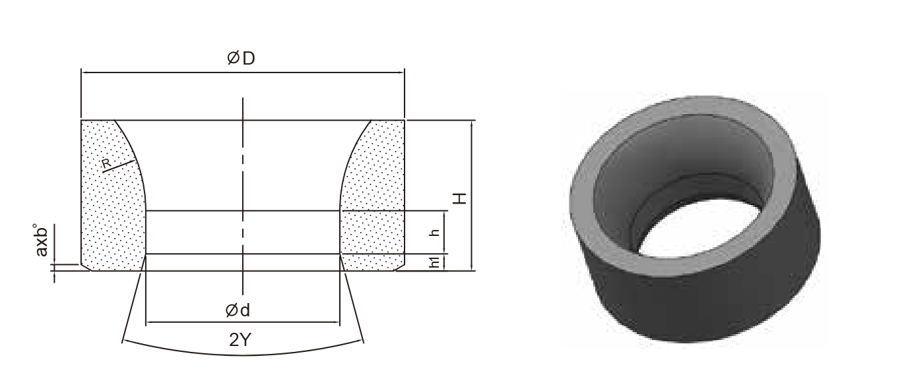
| Волоки G23 для редуцирования труб и уменьшения толщины стенки | |||
|---|---|---|---|
| Обозначение изделия | Размеры D×Hмм | Диаметр отверстия dмм | Угол рабочего конуса 2αград. |
| G23-0503000-d | 50×30 | 25,626,7 | 0 |
| G23-0653500-d | 65×35 | 32,534,135,6536,35 | 0 |
| G23-0703500-d | 70×35 | 38,1638,7540,2 | 0 |
| G23-0753500-d | 75×35 | 44,8545,145,145,246,4 | 0 |
| G23-0803800-d | 80×38 | 49,649,6550,1050,55 | 0 |
| G23-0853800-d | 85×38 | 53,153,256,9 | 0 |
| G23-0954100-d | 95×41 | 59,659,760,1 | 0 |
| G23-1054300-d | 105×43 | 70,1 | 0 |
| G23-1104600-d | 110×46 | 71,774,575,1 | 0 |
| G23-1604800-d | 160×48 | 119,65 | 0 |
Угол рабочего конуса у всей серии равен нулю: канал цилиндрический, обжатие задаётся сочетанием волоки и оправки.
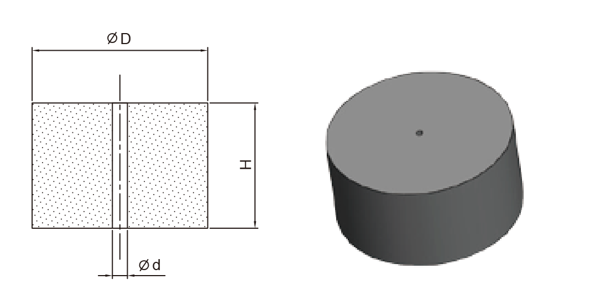
| Обозначение изделия | Размеры D×Hмм | Диаметр отверстия dмм |
|---|---|---|
| GP01-0130800-d | 13×8 | 0,6 |
| GP01-0151000-d | 15×10 | 0,3 |
| GP01-0160800-d | 16×8 | 0,6 |
| GP01-0181000-d | 18×10 | 1,0 |
| GP01-0190800-d | 19×8 | 0,6 |
| GP01-0200800-d | 20×8 | 0,3 |
| GP01-0201000-d | 20×10 | 0,3 |
| GP01-0201200-d | 20×12 | 0,3 |
| GP01-0221000-d | 22×10 | 1,0 |
| GP01-0221200-d | 22×12 | 1,0 |
| GP01-0221500-d | 22×15 | 1,0 |
| GP01-0251000-d | 25×10 | 0,3 · 1,0 |
| GP01-0251200-d | 25×12 | 0,3 · 1,0 |
| GP01-0251400-d | 25×14 | 1,0 |
| GP01-0251500-d | 25×15 | 0,3 |
| GP01-0301200-d | 30×12 | 0,3 · 1,0 |
| GP01-0301500-d | 30×15 | 0,3 |
| GP01-0301800-d | 30×18 | 0,3 |
| GP01-0351700-d | 35×17 | 1,0 |
| GP01-0351800-d | 35×18 | 0,3 |
| GP01-0352000-d | 35×20 | 0,3 · 1,0 |
| GP01-0401800-d | 40×18 | 1,0 |
| GP01-0402000-d | 40×20 | 1,0 |
| GP01-0402100-d | 40×21 | 1,0 |
| GP01-0402500-d | 40×25 | 1,0 |
| Обозначение изделия | Размеры D×Hмм | Диаметр отверстия dмм |
|---|---|---|
| GP01-0451800-d | 45×18 | 1,0 |
| GP01-0452000-d | 45×20 | 1,0 |
| GP01-0452100-d | 45×21 | 1,0 |
| GP01-0452200-d | 45×22 | 1,0 |
| GP01-0502000-d | 50×20 | 1,0 |
| GP01-0502300-d | 50×23 | 1,0 |
| GP01-0502500-d | 50×25 | 1,0 |
| GP01-0552000-d | 55×20 | 2,0 |
| GP01-0602000-d | 60×20 | 2,0 |
| GP01-0602500-d | 60×25 | 2,0 |
| GP01-0603000-d | 60×30 | 2,0 |
| GP01-0652000-d | 65×20 | 2,0 |
| GP01-0702000-d | 70×20 | 2,0 |
| GP01-0702500-d | 70×25 | 2,0 |
| GP01-0703500-d | 70×35 | 2,0 |
| GP01-0802500-d | 80×25 | 2,0 |
| GP01-0803000-d | 80×30 | 2,0 |
| GP01-0804000-d | 80×40 | 2,0 |
| GP01-0902800-d | 90×28 | 2,0 |
| GP01-0903000-d | 90×30 | 2,0 |
| GP01-0903500-d | 90×35 | 2,0 |
| GP01-1003000-d | 100×30 | 2,0 |
| GP01-1003500-d | 100×35 | 2,0 |
| GP01-1103000-d | 110×30 | 2,0 |
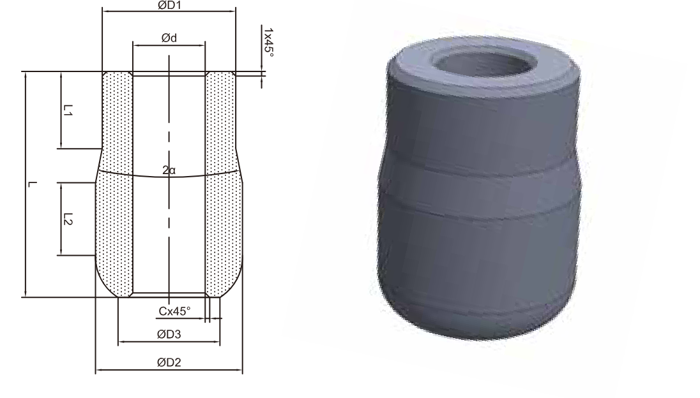
| Оправки для волочения труб | |||
|---|---|---|---|
| Обозначение изделия | D1/D2×Lмм | Диаметр отверстия dмм | Угол рабочего конуса 2αград. |
| GX01-D1D2L22-4.7 | 13,5/14,5×18 | 4,7 | 22 |
| GX01-D1D2L22-7.0 | 14,5/16,5×28 | 7,0 | 22 |
| GX01-D1D2L22-10.0 | 20/22×3220/23×3222/26×3520/24,5×35 | 10,0 | 22 |
| GX01-D1D2L22-12.0 | 24/26×3525,5/27×3525/29,5×5026/27×5026/29×5026/30,5×5026,5/29,5×5027,6/30,8×5028,5/31,5×5027,6/30,8×50" | 12 | 22 |
| GX01-D1D2L22-16.0 | 29,5/32,5×5029,5/34×5029,5/30,8×5031,5/34,5×5032/36×5034,5/40,5×5035/39×4536/40×49,4 | 16 | 22 |
Поставляем стандартные и изготовленные по чертежу износостойкие детали для волочильных участков.
Эти детали работают на воздухе, к ним предъявляются повышенные требования по износостойкости и вязкости. Марка сплава подбирается под условия работы и требования участка. Изготовление по чертежу заказчика.
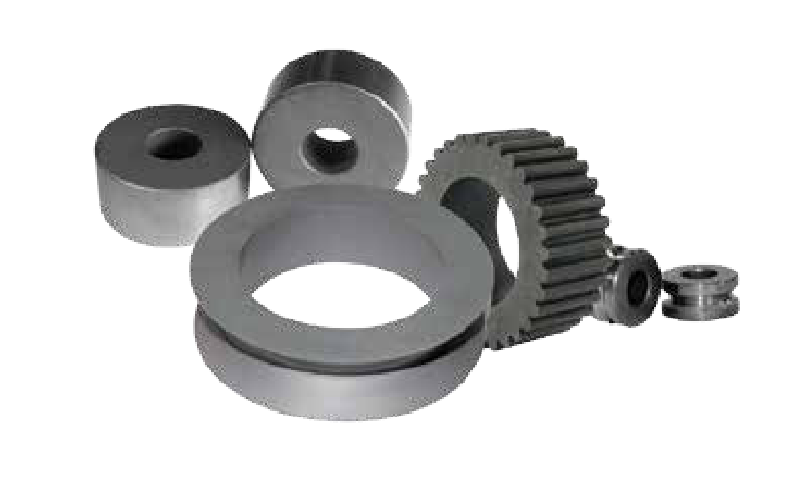